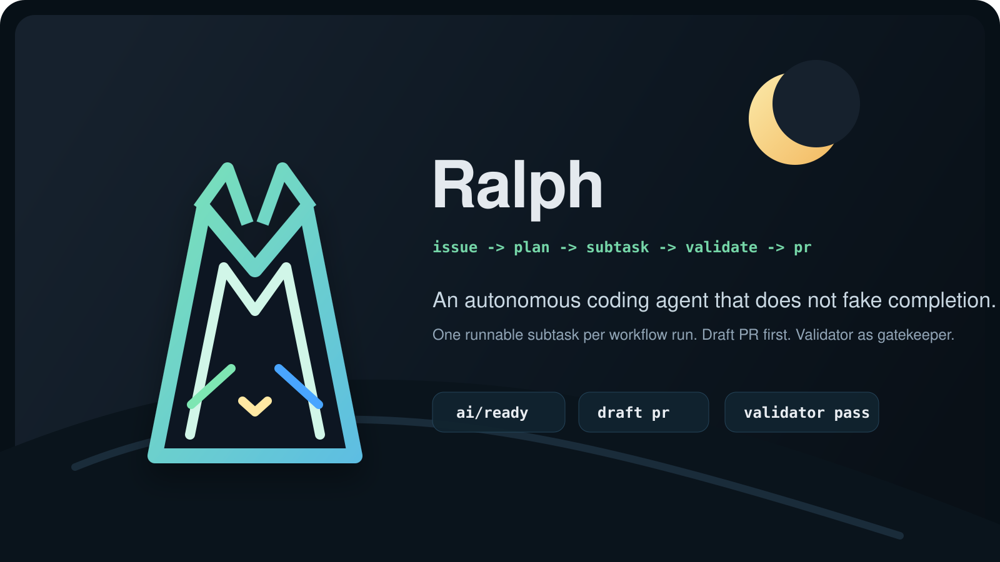

Validator-first 完成门禁
不是“有提交就算成功”，而是必须由验证结果明确放行。
Ralph 会把 GitHub Issue 变成有计划、有验证、可审查的 Pull Request。它不是一条长 prompt 硬做到底，而是更接近工程编排器，特别适合大任务、长流程和需要审计的仓库协作。

Ralph 的核心不是生成代码，而是控制执行节奏：先规划，再一次只执行一个可运行子任务，保存状态，持续更新同一个 PR，最后由验证结果决定任务是否真正完成。
不是“有提交就算成功”，而是必须由验证结果明确放行。
把复杂任务拆成可连续推进的步骤，降低一次性重构失控的概率。
工作尽早可见，但不会提前假装任务已经真正完成。
中心部署可以调度其他代码仓，并保留原始 issue 的路由与反馈。
团队可以在聊天里创建、审批、拒绝和跟踪任务，同时保持 GitHub 为执行真相源。
子任务与执行快照可以跨 workflow 持续存在，而不是散落在日志里。
明确目标、要求、限制和验收标准，让任务可以被可靠地规划。
复杂任务会自动拆分为更可执行的子任务，必要时等待人工审批。
每次运行都做一个可以自证合理的步骤，而不是试图一次完成整个项目。
同一个 Draft PR 持续演化，直到验证通过并满足关闭 issue 的条件。
git clone https://github.com/YOUR_GITHUB_USER/ralph.git /tmp/ralph
cd YOUR_PROJECT
/tmp/ralph/scripts/setup.shSecrets:
RALPH_API_KEY
RALPH_GITHUB_TOKEN
Variables:
RALPH_API_BASE_URL
RALPH_API_MODEL
RALPH_LANG=zh-CN/ralph
目标：重做首页
要求：现代风格，响应式布局
限制：保持当前技术栈
验收：移动端正常，无控制台报错白天写好 issue，晚上自动执行，早上直接看 Draft PR 和验证结果。
把高风险变更拆成可连续推进的步骤，降低一次性改动失控的风险。
飞书里发起和控制任务，所有执行痕迹仍然回到 GitHub 仓库里。
中心 Ralph 部署可以调度其他仓库，同时保留清晰的任务路由和反馈链路。
网站更适合快速介绍 Ralph 是什么、适合什么场景；真正落地接入时，还是建议直接进入 README、 中文文档、飞书文档和架构说明。
英文版总览、架构、执行模型和安装方式。
打开 README中文版安装、概念说明、工作流和使用建议。
打开 README_CN查看飞书接入方式、路由机制和整体编排设计说明。
打开飞书文档